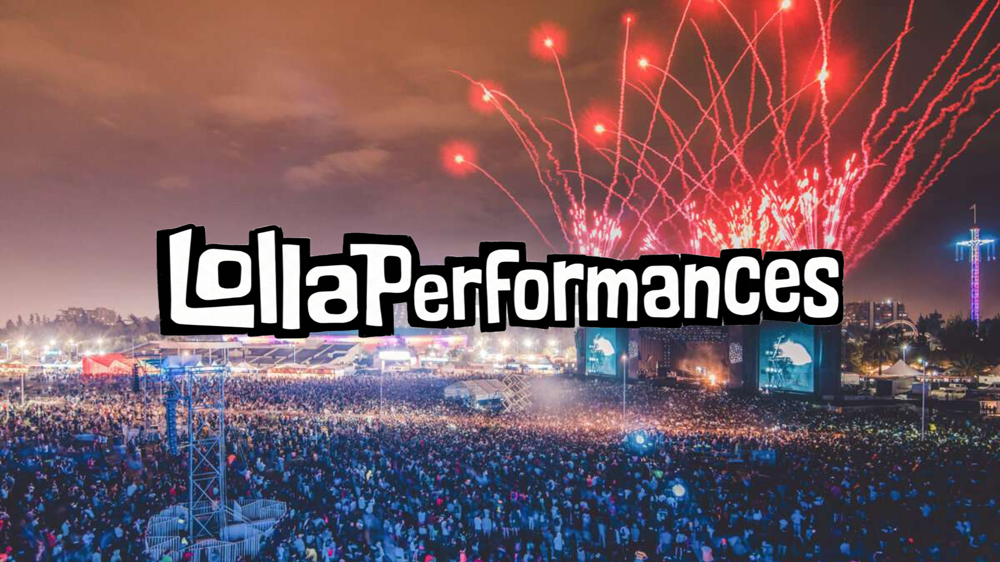

.png)

En el año 2010 la noticia de la llegada del famoso festival estadounidense Lollapalooza generó grandes expectativas en el país. Este evento nació en 1991 gracias al líder de la banda Jane's Addiction: Perry Farrell. En ese entonces Lollapalooza reunia a bandas de rock alternativo, grunge, y otros géneros similares en Arizona. Hoy, este festival amplio su alcance llegando a diversos países alrededor del mundo.
Este evento aterrizó en Chile en el año 2011, el que se realizó en uno de los lugares más emblemáticos de la capital: el Parque O'Higgins. Aunque este lugar conformó su sede principal por varios años, tuvo un cambio en 2022, cuando el festival se trasladó al Parque Bicentenario Cerrillos en la comuna de Cerrillos hasta 2025. Pese a esto, en 2026 volvió a donde toda la magia del Lollapalooza comenzó.
Para su primera edición se presentaron 50 artistas, los que mezclaban tanto a cantantes y bandas nacionales como internacionales. Por su parte, en 2019 se presentaron 125 intérpretes, y en su última versión (2026) un total de 90. Con el pasar de los años, este evento se ha transformado en uno de los más esperados anualmente por los fanáticos de la música, lo que se ve reflejado en el éxito de ventas y en un mayor número de alternativas musicales que se ofrecen al público.
Durante sus primeras ediciones, la identidad del festival estuvo fuertemente marcada por el rock y sus distintas variantes. En las carteleras yacían los nombres de bandas como The Killers, Jane 's Addiction, Foo Fighters, Arctic Monkeys, Pearl Jam, Los Tres, entre muchas otras agrupaciones que ocuparon un lugar protagónico.
Los datos confirman esa tendencia. Entre 2011 y 2015, el rock concentró el 37% de los géneros musicales registrados en el festival, donde los subgéneros más frecuentes fueron el rock tradicional (58), indie rock (36), rock alternativo (32) y pop rock (18). Aunque ya existían propuestas de otros estilos, la programación seguía girando estando dominada por el rock.
Luego de tener su auge en el festival, el rock mantuvo su predominio en el festival, aunque con una presencia menor que en los primeros años, disminuyendo al 27,6% entre 2016 a 2019. Ello marcó el detonante de un cambio en las ediciones, ya que se amplió la gama de géneros musicales, aportando diversidad e incluyendo nuevos artistas que comenzaban a ganar popularidad debido al surgimiento de plataformas de streaming y redes sociales. Según una crónica de Radio Universidad de Chile, Lollapalooza parte con una propuesta más tradicional, pero se ve “obligado” a abrir el abanico de estilos para adecuarse a las nuevas modas.
En el año 2016 los cambios ya se hacían notar con fuerza en la cartelera, incorporando nuevos estilos como la música electrónica con un 8,3% de presencia, el pop con un 4,4%, el hip hop con un 4,1%, el indie pop con un 3,5%, entre otros que fueron ganando espacio edición tras edición, reduciendo el peso predominante del rock dentro del festival. En ese año, el rapero estadounidense, Eminem, fue el primer headliner de hip hop en lo que llevaba el festival. Al año siguiente llegó la cantante estadounidense Melanie Martínez representando al pop e interpretando parte de sus mayores éxitos tales como “Pity Party” y “Soap”, mientras que en 2018 y 2019 la música electrónica ganó protagonismo con figuras como DJ Snake y Steve Aoki. Precisamente esas dos ediciones fueron las que reunieron la mayor cantidad de artistas respecto a todas las ediciones: en el año 2018 se presentaron 100 artistas, y en el 2019 fueron 125 en total.

En el periodo de 2022 a 2025 el rock mantiene una caída, llegando al 26%, pero manteniendo predominancia. Sin embargo, se le sumó un competidor de gran peso: el pop, con un 24,1% se instaló como el segundo género más presente en la cartelera, destacando artistas como Miley Cyrus, Kali Uchis, Shawn Mendes y Sabrina Carpenter. Por su parte, la música urbana y el reguetón conforman el 10,4% de los géneros musicales de las carteleras y el trap llegó al 6,2%.
En quince años, el festival se convirtió en un reflejo fiel de cómo evolucionaron los gustos musicales, pasando desde una identidad marcada por el rock, a una en donde varios géneros confluyen entre sí para entregar una respuesta variada a las audiencias.
A lo largo de la historia de este festival, la presencia de la música chilena no se ha quedado atrás. Si bien en sus primeras ediciones no había una gran cantidad de artistas nacionales, a partir de 2017 comenzó a aumentar considerablemente la presencia de estos últimos, aunque no de forma continua.
Lo mismo ocurre con la cantidad de géneros musicales que ofrecen los artistas chilenos, los que han aumentado con el paso de los años, llegando a su punto máximo en 2018, en donde había un total de 55 géneros musicales diferentes, lo que refleja la versatilidad de la parrilla nacional.
Rock: 29,3%
Electrónica: 17,1%
Hip Hop: 13,0%
Rock: 33,6%
Electrónica: 15,6%
Pop: 9,0%
Rock: 32,9%
Electrónica: 16,8%
Pop: 16,1%
Rock: 35,4%
Electrónica: 15,8%
Pop: 15,8%
Rock: 24,4%
Electrónica: 19,3%
Pop: 11,9%
Rock: 29,4%
Pop: 18,3%
Electrónica: 13,1%
Rock: 26,2%
Pop: 22,0%
Electrónica: 20,1%
Rock: 25,3%
Electrónica: 24,2%
Pop: 14,7%
Electrónica: 31,4%
Rock: 16,5%
Hip Hop: 13,0%
Hip Hop: 22,2%
Pop: 19,2%
Rock: 13,1%
Rock: 23,3%
Pop: 20,7%
Electrónica: 17,7%
Rock: 22,0%
Pop: 17,7%
Electrónica: 12,1%
Rock: 20,7%
Pop: 20,7%
Hip Hop: 13,9%
Pop: 26,8%
Rock: 18,3%
Electrónica: 16,2%
Otros factores más influyentes han modificado el concepto de los shows a lo largo de los años, llevando a las presentaciones a no ser solo música en vivo, sino que experiencias con luces, colores, escenografías y elementos característicos de cada artista. A este fenómeno le llamaremos EVOLUCIÓN.
En esta evolución hemos analizado que, pese a que varían según el artista que se presente, pareciera que no basta con sólo subirse al escenario y cantar o interpretar canciones. En los últimos años, los cantantes o bandas parecieran aprovechar cada vez más todo el espacio y entorno visual que puede crearse sobre los escenarios, para poder representar de esa forma la identidad propia de cada artista, y traer una muestra que trasciende lo auditivo.
Frente a los principales cambios que esperamos ver, hay una correlación directa con el posicionamiento del rock y su posterior desplazamiento ante otros géneros: bandas de rock más tradicionales como Pearl Jam, Foo Fighters o The Killers realizan shows más simples en cuanto al entorno y la escenografía visual, encargándose principalmente de entregar un buen sonido y buena interpretación de sus canciones, más que vestirse de forma llamativa o cambiar su vestuario, o incluir más elementos decorativos en sus puestas en escena.
Con el paso de los años, y el auge y variación de otros géneros de los headliners en cada edición del festival, íconos del pop como Olivia Rodrigo, Miley Cyrus o Lana del Rey, han optado por recrear un escenario que evoque la música que interpretan: escenografía acorde a la temática de sus canciones o álbumes, vestimenta cambiante y elementos visuales en general que apoyen a convertir sus shows en vivo en experiencias identitarias, tanto para las artistas como para el público.
Pero no se lo dejemos solo al pop, porque artistas como Twenty One Pilots o Doechii han demostrado que pueden dar espectáculos mucho más allá de las voces y las líricas. Es aquí donde, si bien no es liderado por un género en específico, la evolución de las performances se vuelve realidad. Hay quienes aún optan por un show más sobrio, sin tanta parafernalia como el de The Marías, sin embargo, la escenografía, las luces, las vestimentas y las cámaras son recursos que siempre apelan a ser llamativos, vistosos y que generen en el público la sensación de estar viendo algo más que al artista cantando

Escribir las proyecciones...